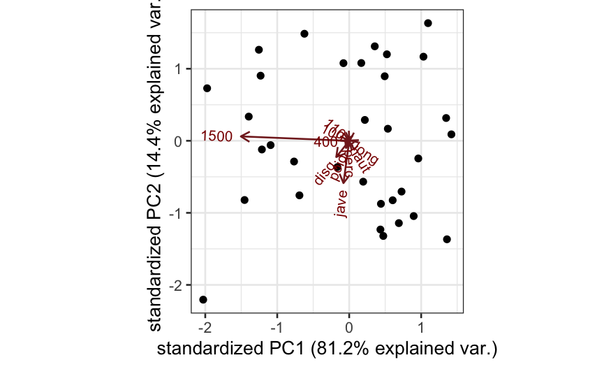

Stat 470/670 Lecture 23: Count responses and Poisson
regression
Julia Fukuyama
Stop and frisk data
Gelman and Hill have data on police stops in New York City in
1998–1999, during Giuliani’s mayoralty. There have been accusations that
some ethnic groups have been stopped at rates not justified by either
their arrest rate or their location (as measured by precinct.)
The data, with noise added for confidentiality, is at http://www.stat.columbia.edu/~gelman/arm/examples/police/frisk_with_noise.dat
The data gives counts of police stops for all combinations of
precinct: 75 total
eth: Ethnicity of the person stopped, three
possibilities (1 = Black, 2 = Hispanic, 3 = white), and
crime: The type of crie, four possibilities (1 =
violent, 2 = weapons, 3 = property, and 4 = drug)
This gives a total of \(75 \times 3 \times
4 = 900\) rows.
There are two other variables in the data set:
pop: population of the ethnic group within the
precinct, and
past.arrests: the number of arrests of people in
that ethnic group in that precinct for that type of crime in
1997.
The first few rows of this file are a description, so we tell R to
skip these when reading the data.
frisk = read.table("http://www.stat.columbia.edu/~gelman/arm/examples/police/frisk_with_noise.dat", skip = 6, header = TRUE)
nrow(frisk)
## [1] 900
## stops pop past.arrests precinct eth
## Min. : 0 Min. : 321 Min. : 0.0 Min. : 1 Min. :1
## 1st Qu.: 26 1st Qu.: 6844 1st Qu.: 53.0 1st Qu.:19 1st Qu.:1
## Median : 72 Median : 18004 Median : 124.0 Median :38 Median :2
## Mean : 146 Mean : 30105 Mean : 262.8 Mean :38 Mean :2
## 3rd Qu.: 173 3rd Qu.: 46669 3rd Qu.: 287.5 3rd Qu.:57 3rd Qu.:3
## Max. :1755 Max. :184345 Max. :2655.0 Max. :75 Max. :3
## crime
## Min. :1.00
## 1st Qu.:1.75
## Median :2.50
## Mean :2.50
## 3rd Qu.:3.25
## Max. :4.00
Having numerical ethnicity is annoying, so recode:
library(dplyr)
frisk$eth = recode_factor(frisk$eth, `1` = "Black", `2` = "Hispanic", `3` = "white")
For the purposes of this lecture, we’ll ignore the type of crime, and
aggregate the number of stops and past arrests over all four types. If
you’re interested though, you should try a model that includes type of
crime as well and see if anything changes.
Aggregating in this way gives us 225 rows (75 precincts by three
ethnic groups):
frisk.sum = frisk %>%
group_by(precinct, eth) %>%
summarise(stops = sum(stops), past.arrests = sum(past.arrests), pop = mean(pop))
## `summarise()` has grouped output by 'precinct'. You can override using the
## `.groups` argument.
## [1] 225
## precinct eth stops past.arrests pop
## Min. : 1 Black :75 Min. : 7.0 Min. : 16 Min. : 321
## 1st Qu.:19 Hispanic:75 1st Qu.: 133.0 1st Qu.: 312 1st Qu.: 6844
## Median :38 white :75 Median : 385.0 Median : 571 Median : 18004
## Mean :38 Mean : 584.1 Mean :1051 Mean : 30105
## 3rd Qu.:57 3rd Qu.: 824.0 3rd Qu.:1467 3rd Qu.: 46669
## Max. :75 Max. :2771.0 Max. :5667 Max. :184345
Let’s first draw some pictures.
ggplot(frisk.sum, aes(x = stops, color = eth, fill = eth)) +
geom_histogram(breaks = seq(0, 2800, 50)) + facet_wrap(~eth, ncol = 1)

Quite clearly, the distributions of stops for Black and Hispanic
people are very different from the distribution for white people, though
there may be multiple explanations for this.
Let’s look at the relationship of stops with past arrests. Because of
skewness, we log both variables.
ggplot(frisk.sum, aes(x = (past.arrests), y = (stops), color = eth)) + geom_point()
There’s certainly a relationship. The question is whether the
relationship between the two variables is sufficient to explain the
differences between the stops of the three ethnic groups. You could get
at this just by adding smoother for the three groups:
ggplot(frisk.sum, aes(x = log(past.arrests), y = log(stops), group = eth, color = eth)) + geom_point(size = 1) + geom_smooth(method = "loess", method.args = list(degree = 1))
## `geom_smooth()` using formula 'y ~ x'

Since this is an important topic, however, we should be a bit more
careful and construct a model.
Poisson regression
We’ll model this data using (at first) Poisson regression,
another form of generalized linear model.
Poisson regression is used instead of standard linear regression when
the response variable is a count (0, 1, 2, etc.) instead of a real
number.
You could use standard linear regression here (if you put
the numbers into lm in R it will give you results), but
Poisson regression can be better because counts tend to have a Poisson
distribution, and Poisson distributed variables have a fixed
relationship between the mean and the variance.
If \(y \sim \text{Pois}(\lambda)\),
then \(E(y) = \lambda\) and \(\text{Var}(y) =\lambda\). This relationship
is inconsistent with the homoskedasticity assumptions of linear
regression.
In a standard Poisson regression, the response has a Poisson
distribution with the log of the expected value given by a
linear function of the predictors.
In the single-variable case: \[
\log(E[Y \mid x]) = \beta_0 + \beta_1 x
\] and \[
Y \sim \text{Pois}(E[Y \mid x])
\]
We’ll start off with a Poission regression model that’s much too
simple, and build up to a more useful one.
The simplest model just treats each number of stops as a realization
of a Poisson random variable.
constant.glm = glm(stops ~ 1, family = poisson, data = frisk.sum)
summary(constant.glm)
##
## Call:
## glm(formula = stops ~ 1, family = poisson, data = frisk.sum)
##
## Deviance Residuals:
## Min 1Q Median 3Q Max
## -33.049 -22.552 -8.788 9.343 65.227
##
## Coefficients:
## Estimate Std. Error z value Pr(>|z|)
## (Intercept) 6.370053 0.002758 2309 <2e-16 ***
## ---
## Signif. codes: 0 '***' 0.001 '**' 0.01 '*' 0.05 '.' 0.1 ' ' 1
##
## (Dispersion parameter for poisson family taken to be 1)
##
## Null deviance: 123333 on 224 degrees of freedom
## Residual deviance: 123333 on 224 degrees of freedom
## AIC: 125041
##
## Number of Fisher Scoring iterations: 5
By now you might be sick of all the cruft that gets displayed when we
use summary() on a GLM. Let’s use Gelman et al.’s
display() function in package arm instead.
# install.packages("arm")
library(arm)
## Error in library(arm): there is no package called 'arm'
## Error in display(constant.glm): could not find function "display"
This pares away most of the low value information. We see the
coefficent estimate (on the log scale) is 6.37, which gives \(e^{6.37} = 584\) on the original scale.
That is, the number of stops for each ethnic group within each precinct
is modeled as a random variable with distribution
\[
\textrm{Poisson}(584).
\]
The other number to keep track of is the (residual)
deviance. Low deviance is good, as long as you’re not
overfitting. In particular, every time you add a degree of freedom, you
should expect to reduce the deviance by 1 if you’re just adding random
noise. So if you’re not overfitting when you fit a complex model, you
should expect to reduce the deviance by more than you increase the
degrees of freedom.
Now this model is obviously inadequate. We might, for example, think
that the number of stops for an ethnic group in a precinct should be
proportional to the number of arrests for that ethnicity-precinct
(though this is controversial.) In a GLM, we can model this using an
offset:
offset.glm = glm(stops ~ 1, family = poisson, offset = log(past.arrests), data = frisk.sum)
display(offset.glm)
## Error in display(offset.glm): could not find function "display"
Since the linear predictor is on the log scale, the offset also has
to be logged. This gives the following model for each precinct/race
combination:
\[
\log[E(\textrm{stops}|\textrm{past arrests})] = -0.59 +
\log(\textrm{past arrests})
\] or (taking the exponential of both sides) \[
E(\textrm{stops}|\textrm{past arrests}) = e^{-0.59 + \log(\textrm{past
arrests})} = 0.56 \times \textrm{past arrests}
\]
To check this, we look at the predicted number of stops for
precinct/race combinations with 10, 100, and 1000 past arrests
respectively:
augment(offset.glm,
newdata = data.frame(past.arrests = c(10, 100, 1000)),
type.predict = "response")
## # A tibble: 3 × 2
## past.arrests .fitted
## <dbl> <dbl>
## 1 10 5.56
## 2 100 55.6
## 3 1000 556.
Our model has a much lower deviance than the constant model, so we’ve
improved the fit by a lot.
Now we want to see what happens if we add ethnic group as a
predictor. Ethnic group is categorical, so we use it as a factor.
eth.glm = glm(stops ~ eth, family = poisson, offset = log(past.arrests), data = frisk.sum)
display(eth.glm)
## Error in display(eth.glm): could not find function "display"
Note that “past arrests” doesn’t have a coefficient: the model
assumes that expected stops are proportional to past arrests (where the
constant of proportionality may depend on other stuff.) The deviance has
dropped substantially again. On the log scale, we have additive terms
for the offset and for ethnicity (relative to Black, which is taken as
the baseline due to alphabetical order.) On the original scale, the
terms are multiplicative, and we can combine the offset and ethnicity
terms to get a coefficient for each ethnicity. That is, the model is
now
\[
\begin{align*}
E(\textrm{stops} | \textrm{ethnic group, past arrests}) &=
e^{\textrm{intercept} + \textrm{ethnicity coefficient} +
\textrm{log}(\textrm{past arrests})}\\
&= \textrm{multiplier for ethnic group} \times \textrm{past
arrests}
\end{align*}
\]
where the multipliers are
eth.co = coefficients(eth.glm)
multipliers = exp(c(eth.co[1], eth.co[1] + eth.co[2], eth.co[1] + eth.co[3]))
print(multipliers)
## (Intercept) (Intercept) (Intercept)
## 0.5553894 0.5957836 0.4725238
eth.coef = tidy(eth.glm)$estimate
multipliers = exp(c(eth.coef[1],
eth.coef[1] + eth.coef[2],
eth.coef[1] + eth.coef[3]))
multipliers
## [1] 0.5553894 0.5957836 0.4725238
for Black, Hispanic, and white respectively. We can check this using
augment():
augment(eth.glm,
newdata = data.frame(past.arrests = 1000, eth = c("Black", "Hispanic", "white")),
type.predict = "response")
## # A tibble: 3 × 3
## past.arrests eth .fitted
## <dbl> <chr> <dbl>
## 1 1000 Black 555.
## 2 1000 Hispanic 596.
## 3 1000 white 473.
So far we have shown that Black and Hispanic people were stopped at a
proportionately higher fraction of their arrest rate compared to white
people.
However, as the data isn’t from a randomized experiment, there may be
confounding — it could be that Black and Hispanic people generally live
in precincts with higher stop rates. (Whether this is in itself evidence
of bias is again, controversial.)
Since this is exploratory work, we won’t attempt to prove
cause-and-effect, but we’ll see whether we can simply explain the
results by including a precinct variable. If we can, then the NYPD might
argue that minorities are only stopped more often because they, perhaps
coincidentally, tend to live in precincts with high stop rates.
precinct.glm = glm(stops ~ eth + factor(precinct), family = poisson, offset = log(past.arrests), data = frisk.sum)
We won’t print out the full results because we now have a coefficient
for each precinct. Let’s just first check the deviance has gone down
significantly:
## [1] 45437.35
## [1] 3427.14
Now look at the first few coefficients (and their standard
errors):
## # A tibble: 77 × 5
## term estimate std.error statistic p.value
## <chr> <dbl> <dbl> <dbl> <dbl>
## 1 (Intercept) -1.38 0.0510 -27.0 7.21e-161
## 2 ethHispanic 0.0102 0.00680 1.50 1.34e- 1
## 3 ethwhite -0.419 0.00943 -44.4 0
## 4 factor(precinct)2 -0.149 0.0740 -2.01 4.41e- 2
## 5 factor(precinct)3 0.560 0.0568 9.87 5.87e- 23
## 6 factor(precinct)4 1.21 0.0575 21.0 3.03e- 98
## 7 factor(precinct)5 0.283 0.0568 4.98 6.34e- 7
## 8 factor(precinct)6 1.14 0.0580 19.7 1.72e- 86
## 9 factor(precinct)7 0.218 0.0643 3.39 6.96e- 4
## 10 factor(precinct)8 -0.391 0.0569 -6.87 6.51e- 12
## # … with 67 more rows
After controlling for precinct, the differences between the white and
minority coefficients becomes even bigger.
Checking the model
As usual, our first plot for checking the model is to plot the
residuals against the fitted values and see what happens.
precinct.glm.df = augment(precinct.glm, type.predict = "response", type.residuals = "pearson")
ggplot(precinct.glm.df, aes(x = log(.fitted), y = .resid)) + geom_point() + geom_smooth(method = "loess", span = 1, method.args = list(degree = 1))
## `geom_smooth()` using formula 'y ~ x'

There’s some nonlinearity in the smoother, though the amount is
relatively small. If prediction was the goal, a nonparametric model
might provide an improvement.
Overdispersion
If we care about more than just the conditional expectation, however,
we find a bigger problem. If the Poisson model were correct, the
standardized residuals should be on a similar scale to the standard
normal – that is, the vast majority should be within \(\pm 2\). From the previous graph, that’s
clearly not the case.
We need to measure the overdispersion in the data. We could
do a formal \(\chi^2\) test for
overdispersion, but instead, let’s calculate the typical size of the
squared residuals. (When we “average”, we divide the sum by the residual
degrees of freedom.) If the Poisson model is correct, this should be
close to 1. If it’s much more than 1, we need a better model.
overdispersion = sum(precinct.glm.df$.resid^2) / df.residual(precinct.glm)
overdispersion
## [1] 21.88505
This is much more than 1. In fact, this happens a lot with counts –
the data is often more dispersed than the Poisson model.
How bad is it?
We know there are problems with our model. But are they so bad that
we can’t draw conclusions from it?
One simple way of checking is to simulate a fake set of data, and see
if it closely resembles the actual set.
For a Poisson model, this is easy. We know according to the model,
each observation is a realization of a Poisson random variable, whose
parameter is given by the fitted value. Then we can use
rpois() to do simulation and do numerical summaries and
plots.
precinct.fits = augment(precinct.glm, type.predict = "response")$.fitted
sim1 = rpois(nrow(frisk.sum), lambda = precinct.fits)
summary(frisk.sum$stops)
## Min. 1st Qu. Median Mean 3rd Qu. Max.
## 7.0 133.0 385.0 584.1 824.0 2771.0
## Min. 1st Qu. Median Mean 3rd Qu. Max.
## 9.0 158.0 379.0 583.6 817.0 2728.0
sim.df = data.frame(frisk.sum, sim1)
library(tidyr)
sim.long = sim.df %>% gather(type, number, c("stops", "sim1"))
ggplot(sim.long, aes(x = number)) + geom_histogram(breaks = seq(0, 2800, 50)) + facet_wrap(~type, ncol = 1)

If we look at the histograms, there doesn’t seem to be much
difference. But what happens if we fit a model to the simulated data and
look at its residuals? We’ll find these and do a two-sample QQ plot of
them against the original residuals.
precinct.sim = glm(sim1 ~ eth + factor(precinct), family = poisson, offset = log(past.arrests), data = sim.df)
resid.df = data.frame(real.resid = augment(precinct.glm, type.predict = "response")$.resid,
sim.resid = augment(precinct.sim, type.predict = "response")$.resid)
ggplot(resid.df) +
stat_qq(aes(sample = sim.resid),
distribution = function(p) quantile(resid.df$real.resid, probs = p)) +
geom_abline(intercept = 0, slope = 1) +
xlab("real residual quantiles") + ylab("simulation residual quantiles")

If the model were correct, this QQ plot should be close to a line
through the origin with slope 1, and this is not. The real residuals are
much more spread out/have much larger variance than the residuals in the
simulation.
The simulation here is overkill, since we understand the Poisson
fairly well and already know the data is overdispersed. However, the
more complicated your model gets, the more useful this kind of
simulation is as a sanity check.
Fixing overdispersion
The quickest fix is to use the quasipoisson family instead of the
Poisson.
precinct.quasi = glm(stops ~ eth + factor(precinct), family = quasipoisson, offset = log(past.arrests), data = frisk.sum)
tidy(precinct.quasi)
## # A tibble: 77 × 5
## term estimate std.error statistic p.value
## <chr> <dbl> <dbl> <dbl> <dbl>
## 1 (Intercept) -1.38 0.239 -5.78 4.33e- 8
## 2 ethHispanic 0.0102 0.0318 0.320 7.49e- 1
## 3 ethwhite -0.419 0.0441 -9.49 5.49e-17
## 4 factor(precinct)2 -0.149 0.346 -0.430 6.68e- 1
## 5 factor(precinct)3 0.560 0.266 2.11 3.66e- 2
## 6 factor(precinct)4 1.21 0.269 4.50 1.38e- 5
## 7 factor(precinct)5 0.283 0.266 1.06 2.89e- 1
## 8 factor(precinct)6 1.14 0.272 4.21 4.35e- 5
## 9 factor(precinct)7 0.218 0.301 0.725 4.70e- 1
## 10 factor(precinct)8 -0.391 0.266 -1.47 1.44e- 1
## # … with 67 more rows
Note that the coefficients look the same as they were in the standard
Poisson case. However, their standard errors have been inflated by the
square root of their overdispersion. We can confirm that the fitted
values haven’t changed:
precinct.fitted = augment(precinct.glm, type.predict = "response")$.fitted
quasi.fitted = augment(precinct.quasi, type.predict = "response")$.fitted
summary(quasi.fitted - precinct.fitted)
## Min. 1st Qu. Median Mean 3rd Qu. Max.
## 0 0 0 0 0 0
So the quasipoission doesn’t change the fit, only the variance and
the standard errors.
For interpretation, it may be useful to refit the model changing the
order of levels in eth to use whites as a baseline.
frisk.sum.relev = frisk.sum %>% mutate(eth.releveled = factor(eth, levels = c("white", "Black", "Hispanic")))
precinct.quasi2 = glm(stops ~ eth.releveled + factor(precinct),
family = quasipoisson, offset = log(past.arrests),
data = frisk.sum.relev)
tidy(precinct.quasi2)
## # A tibble: 77 × 5
## term estimate std.error statistic p.value
## <chr> <dbl> <dbl> <dbl> <dbl>
## 1 (Intercept) -1.80 0.241 -7.46 6.81e-12
## 2 eth.releveledBlack 0.419 0.0441 9.49 5.49e-17
## 3 eth.releveledHispanic 0.429 0.0449 9.57 3.49e-17
## 4 factor(precinct)2 -0.149 0.346 -0.430 6.68e- 1
## 5 factor(precinct)3 0.560 0.266 2.11 3.66e- 2
## 6 factor(precinct)4 1.21 0.269 4.50 1.38e- 5
## 7 factor(precinct)5 0.283 0.266 1.06 2.89e- 1
## 8 factor(precinct)6 1.14 0.272 4.21 4.35e- 5
## 9 factor(precinct)7 0.218 0.301 0.725 4.70e- 1
## 10 factor(precinct)8 -0.391 0.266 -1.47 1.44e- 1
## # … with 67 more rows
We now back-transform to get intervals for the stop rates of Blacks
and Hispanics relative to whites, after adjusting for arrest rates and
precinct.
## 2 and 3 are the rows corresponding to the Black and hispanic coefficients
eth.co = tidy(precinct.quasi2)[2:3,]
eth.co$ethnicity = c("Black", "Hispanic")
eth.co.plotting = eth.co %>%
mutate(estimate_rescaled = exp(estimate),
lower = exp(estimate - 2 * std.error),
upper = exp(estimate + 2 * std.error))
ggplot(eth.co.plotting) +
geom_pointrange(aes(x = ethnicity, y = estimate_rescaled, ymin = lower, ymax = upper)) +
ylim(1,2) +
geom_abline(intercept = 1, slope = 0, color = "red")+
ylab("Ratio of stop rate to that of whites,\nadjusted for past arrests and precinct") +
ggtitle("Approximate 95% confidence intervals\nfor NYPD stop rates of minorities") +
coord_flip()

The confidence intervals don’t include 1. This would be consistent
with a hypothesis of bias against minorities, though we should think
very carefully about other confounding variables before drawing a firm
conclusion (e.g. type of crime, which we ignored.) You should check your
model very thoroughly. The statistics cannot give you a definitive
answer, but they can constrain what sorts of answers are consistent with
the data.
Other fixes
There are lots of alternative approaches:
- Negative binomial regression is an alternative to the quasipoisson
when the count data is overdispersed.
- Nonparametric approaches like loess and GAM can give you a better
fit for the conditional expectation, at the cost of making inference
much more complicated.
- A multilevel model has appeal here because of the large number of
precincts. It can deal with overdispersion as well as regularize the
estimates for the precincts. These get complicated very quickly
though..